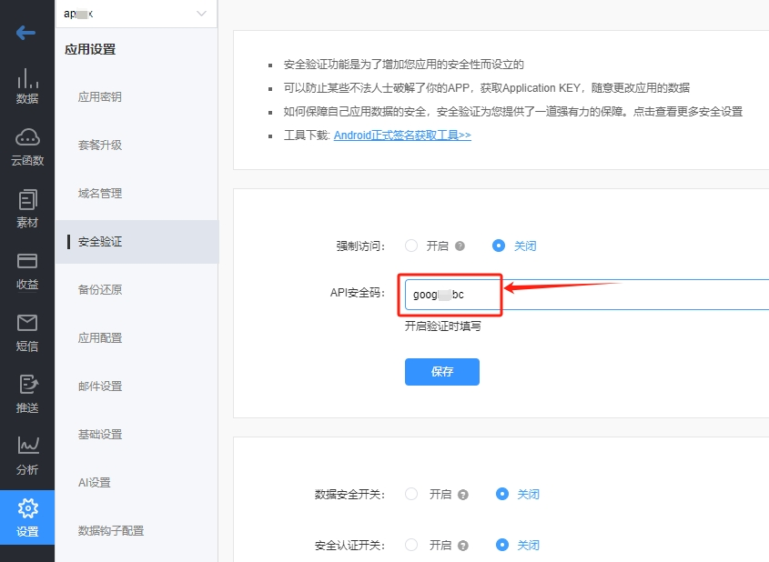

bmob harmony sdk是Bmob后端云专门为鸿蒙系统开发的原生SDK，完全采用ArkTS语言开发，支持云数据库、云函数、文件服务、短信服务等，帮助开发者专注前端交互，快速开发应用。
开发案例¶
为了方便大家更好的使用Bmob鸿蒙SDK，我们提供了一个持续更新的开发案例文档，查看地址：
https://juejin.cn/column/7369897767182352384
安装SDK¶
打开 DevEco Studio 开发工具，新建一个Project。Model选择Stage，开发语言选择ArkTS，如下图所示：。

在 DevEco Studio 开发工具的命令行（Terminal）中执行下面的命令，安装Bmob Harmony SDK：
ohpm install @bmob/bmob
如果一切顺利，你会在当前项目下的oh_modules目录下看到@bmob/bmob的包已经成功下载，如下图所示：
如果执行命令时如果出现：无法将“ohpm"项识别为 cmdlet、函数、脚本文件或可运行程序的名称。的错误提示，请先将 ohpm 命令添加到path环境变量中再执行安装。
获取密钥¶
登录 Bmob后端云 ，创建应用，获取Secret Key和Secret Code，如下图所示：


初始化应用¶
在你创建的鸿蒙应用中，entry/src/main/ets 下面新建一个ArkTS File，名为BmobApp。目录结构如下：

代码如下：
import { Bmob } from '@bmob/bmob';
import AbilityStage from '@ohos.app.ability.AbilityStage';
export default class BmobApp extends AbilityStage {
onCreate() {
super.onCreate();
Bmob.initialize('4cf1d10fc37b994c', '1ce87fa28df432a0')
}
}
配置网络权限和设置应用入口¶
打开 entry/src/main/module.json5 文件，在module节点下面新增 srcEntry 和 requestPermissions 子节点，配置如下：
{
"module": {
"name": "entry",
"type": "entry",
"description": "$string:module_desc",
"mainElement": "EntryAbility",
"deviceTypes": [
"phone",
"tablet"
],
"srcEntry": "./ets/BmobApp.ets",
"requestPermissions": [
{
"name": "ohos.permission.INTERNET"
}
],
...省略更多
}
}

数据操作¶
现在，我们就可以在ArkUI里面有需要用到云服务的地方添加Bmob的交互代码了。
首先，在pages的头部添加引用代码：
import {Bmob} from '@bmob/bmob'
添加数据¶
Button('添加数据')
.onClick(()=>{
let query = Bmob.Query('test');
query.set('name', 'Bmob后端云');
query.set('age', 34);
query.save().then((res) => {
if (res != undefined) {
Prompt.showToast({ message: '添加成功，objectId=' + res.objectId });
}
}).catch((err) => {
Prompt.showToast({ message: `添加失败，原因:${err.error} 错误码：${err.code}` });
});
})
其中，test 对应Bmob后端云中的数据表名称，name、age 是test这个表中的字段名称，执行 Bmob.Query.save() 方法，会将数据添加Bmob后端云中。
如果执行成功，将会返回这条记录在Bmob后端云中对应的唯一标记 objectId 信息，如下图所示：
如果执行不成功，会返回错误对象信息，错误对象信息包含error(错误原因)和code（错误码）。
错误码列表文档请参考官方文档：https://doc.bmobapp.com/other/error_code/index.html
修改数据¶
Button('修改数据')
.onClick(() => {
let query = Bmob.Query('test');
query.set('objectId', 'b712866787');
query.set('name', 'Bmob后端云新增鸿蒙SDK');
query.set('age', 30);
query.save().then((res) => {
Prompt.showToast({ message: '修改成功，updatedAt=' + res.updatedAt });
}).catch((err) => {
Prompt.showToast({ message: '修改失败，原因:' + err.error });
});
});
其中，test对应Bmob后端云中的数据表名称，objectId是我们要修改的那条数据的唯一标记，name、age 是test这个表中的字段名称，执行 Bmob.Query.save() 方法，会将数据修改Bmob后端云中。
如果执行成功，将会返回这条记录的更新时间updatedAt.
删除数据¶
Button('删除数据')
.onClick(() => {
let query = Bmob.Query('test');
query.destroy('d070b6b8fa').then((res) => {
Prompt.showToast({ message: '删除成功' });
}).catch((err) => {
Prompt.showToast({ message: '删除失败，原因:' + err.error });
});
});
其中，test对应Bmob后端云中的数据表名称，objectId是我们要删除的那条数据的唯一标记，执行 Bmob.Query.destroy() 方法，会将数据从Bmob后端云中删除。
如果执行成功，将会返回boolean值，表示数据是否删除成功。
获取指定的一条数据¶
Button('获取指定的一条数据')
.onClick(() => {
let query = Bmob.Query('test');
query.get('d9a7bd816e').then((res) => {
Prompt.showToast({ message: res.name });
}).catch((err) => {
Prompt.showToast({ message: '获取失败，原因:' + err.error });
});
});
其中，test对应Bmob后端云中的数据表名称，Bmob.Query.get() 方法需要指定这条数据的唯一标识objectId(这里是d9a7bd816e)作为这个方法的唯一参数。
如果执行成功，将会返回这条数据的对象值。
查询多条数据¶
Button('获取多条数据')
.onClick(() => {
let query = Bmob.Query('test');
query.find().then((res) => {
res.forEach((result: any) => {
console.log('返回数据 name=' + result.name);
});
}).catch((err) => {
Prompt.showToast({ message: '获取失败，原因:' + err.error });
});
});
其中，test对应Bmob后端云中的数据表名称，执行Bmob.Query.find() 方法，我们可以获取test表中前100条最新的数据。
如果执行成功，将会返回这些数据的对象列表信息，我们可以用forEach方法进行遍历。
条件查询¶
很多时候，我们需要对数据进行筛查，这就需要用到 Bmob.Query.where 的条件查询的方法，指定条件查询。如下面的代码表示要从test表中获取age大于20，而且小于40的所有数据。
Button('条件查询')
.onClick(() => {
let query = Bmob.Query('test');
query.where(AND(GT('age', 20), LT('age', 40)))
.find()
.then((res) => {
res.forEach((result: any) => {
console.log('返回数据 age=' + result.age);
});
})
.catch((err) => {
Prompt.showToast({ message: '查询失败，原因:' + err.error });
});
});
bmob harmony sdk支持的条件查询方法如下：
| 方法 | 说明 |
|---|---|
| AND | 而且 |
| OR | 或者 |
| GT | 大于 |
| GTE | 大于等于 |
| LT | 小于 |
| LTE | 小于等于 |
| LIKE | 模糊查询 |
| NE | 不等于 |
| IN | 包含在数组中 |
| NIN | 不包含在数组中 |
分页查询¶
直接使用Bmob.Query的find方法最多只能一次返回100条数据，那如果表中的数据超过100条，我们应该如何获取呢？这就需要用到分页查询了。代码如下：
Button('分页查询')
.onClick(() => {
let query = Bmob.Query('test');
query.where(AND(GT('age', 20), LT('age', 40)))
.skip(10)
.limit(50)
.find()
.then((res) => {
res.forEach((result: any) => {
console.log('返回数据 age=' + result.age);
});
})
.catch((err) => {
Prompt.showToast({ message: '查询失败，原因:' + err.error });
});
});
其中，skip方法表示跳过前面的10条数据，limit方法表示这次最多返回50条数据。
只选择某些列返回查询¶
有时候，我们不需要返回所有的列给客户端，这样可以节省流量，提高速度。
这就需要用到Bmob.Query的select方法，比如，我们只需要test表中的age和name字段，就可以用下面的代码：
Button('只选择某些列返回查询')
.onClick(() => {
let query = Bmob.Query('test');
query.where(AND(GT('age', 20), LT('age', 40)))
.select('age,name')
.find()
.then((res) => {
res.forEach((result: any) => {
console.log('返回数据 age=' + result.age);
});
})
.catch((err) => {
Prompt.showToast({ message: '查询失败，原因:' + err.error });
});
});
计数查询¶
我们有时需要知道某些条件下的数据有多少条，这就需要用到Bmob.Query.count方法进行计数查询，代码如下：
Button('计数查询')
.onClick(() => {
let query = Bmob.Query('test');
query.where(AND(GT('age', 20), LT('age', 40)))
.count()
.then((res) => {
res.forEach((result: any) => {
console.log('返回数据 age=' + result.age);
});
})
.catch((err) => {
Prompt.showToast({ message: '查询失败，原因:' + err.error });
});
});
统计有关的查询¶
统计有关的查询都是针对number类型的字段，比如求age字段的最大值、最小值、平均数。
最大值¶
使用Bmob.Query的max方法可以获取对应字段的最大值，比如下面的代码是计算age大于40的数据里面的最大值。
Button('age的最大值')
.onClick(() => {
let query = Bmob.Query('test');
query.where(GT('age',40)).max('age').then((res) => {
Prompt.showToast({ message: res.toString() });
}).catch((err) => {
Prompt.showToast({ message: '计算最大值失败，原因:' + err.error });
});
});
最小值¶
使用Bmob.Query的min方法可以获取对应字段的最小值，比如下面的代码是计算age的最小值。
Button('age的最小值')
.onClick(() => {
let query = Bmob.Query('test');
query.min('age').then((res) => {
Prompt.showToast({ message: res.toString() });
}).catch((err) => {
Prompt.showToast({ message: '计算最小值失败，原因:' + err.error });
});
});
平均值¶
使用Bmob.Query的average方法可以获取对应字段的最小值，比如下面的代码是计算age的平均值。
Button('age的平均值')
.onClick(() => {
let query = Bmob.Query('test');
query.average('age').then((res) => {
Prompt.showToast({ message: res.toString() });
}).catch((err) => {
Prompt.showToast({ message: '计算平均值失败，原因:' + err.error });
});
});
短信服务¶
发送短信验证码¶
执行Bmob.requestSmsCode方法，可以往执行的手机号码发送短信验证码。
Button('发送短信验证码')
.onClick(() => {
Bmob.requestSmsCode('13800138000').then((res) => {
Prompt.showToast({ message: '发送成功' });
console.log('请求输出 smsId=' + res.smsId);
}).catch((err) => {
Prompt.showToast({ message: '发送失败，原因:' + err.error });
});
});
默认情况下，发送的短信验证码签名是Bmob后端云企业的官方签名，如果你想改为你自己独特的短信签名，你就需要先到Bmob后端云的控制台中先申请短信验证码模版（如下图所示），待审核通过之后，再修改requestSmsCode方法，添加验证码模版的名称作为第二个参数，代码如下：
Button('发送短信验证码')
.onClick(() => {
Bmob.requestSmsCode('13800138000','你的短信验证码模版名称').then((res) => {
Prompt.showToast({ message: '发送成功' });
console.log('请求输出 smsId=' + res.smsId);
}).catch((err) => {
Prompt.showToast({ message: '发送失败，原因:' + err.error });
});
});
检查短信验证码¶
执行Bmob.verifySmsCode方法，可以检查收到的短信验证码是否正确，如下面的代码，检查13800138000这个手机收到的802093验证码是否正确。
如果正确，返回true，否则返回false。
Button('检查短信验证码')
.onClick(() => {
Bmob.verifySmsCode('13800138000', '802093').then((res) => {
if (res) {
Prompt.showToast({ message: '验证码正确' });
}
else {
Prompt.showToast({ message: '验证码错误' });
}
});
});
调用云函数¶
客户端的代码安装到客户手机之后，更新相对比较麻烦，有时候，我们希望一些代码具有高度的可变动性，这就需要用到Bmob的云代码功能。云代码的开发大家可查看Bmob后端云的官方文档： https://doc.bmobapp.com/cloud_function/web/
客户端调用云函数的方法如下：
Button('调用云函数')
.onClick(() => {
let data = {
"age": 18,
"name": "北京海淀区"
}
Bmob.functions('good',data).then((res) => {
Prompt.showToast({ message: '云函数返回：' + res });
}).catch((err) => {
Prompt.showToast({ message: '调用云函数失败，原因' + err.error });
});
});
其中，good是我们在Bmob后端云控制台上创建的云函数方法名称，data是我们希望传递给这个方法的参数。
用户管理¶
很多应用都会涉及到用户账号体系，为了方便大家便捷开发，Bmob后端云提供了 Bmob.User 类的完整用户管理的接口。
账号密码进行用户注册¶
Button('账号密码进行用户注册')
.onClick(() => {
let user = Bmob.User();
user.register({
'username': '13800138000',
'password': '123456',
'age': 18,
'address': '广州番禺'
}).then((res) => {
console.log('注册返回信息'+ JSON.stringify(res));
Prompt.showToast({ message: '注册成功，objectId=' + res.objectId });
}).catch((err) => {
Prompt.showToast({ message: '注册失败，原因:' + err.error });
});
});
注意，register方法的参数必须包含username（账号）和password（密码），其他参数可根据实际情况添加。
手机验证码一键注册登录¶
调用signOrLoginByMobilePhone方法，提供手机号码、收到的短信验证码和注册的信息（如果是登录，data可设置为 {} ），可实现一键注册登录，代码如下：
Button('手机验证码一键注册/登录')
.margin(10)
.onClick(() => {
let user = Bmob.User();
let data = {
"age": 18,
"address": "北京海淀区"
}
user.signOrLoginByMobilePhone('13800138000', '776232', data).then((res) => {
Prompt.showToast({ message: '登录成功，' + res.username });
}).catch((err) => {
Prompt.showToast({ message: '登录失败，原因' + err.error });
});
});
账号密码进行用户登录¶
使用login方法，账号 和 密码 作为方法的参数，可进行登录验证，代码如下。
Button('用户登录')
.onClick(() => {
let user = Bmob.User();
user.login('13800138000', '123456').then((res) => {
Prompt.showToast({ message: '登录成功，objectId=' + res.objectId });
}).catch((err) => {
Prompt.showToast({ message: '登录失败，原因:' + err.error });
});
});
如果登录成功，Bmob SDK会自动保存用户的信息到内存中。
获取登录用户的信息¶
Button('获取登录用户信息')
.onClick(() => {
let user = Bmob.User();
user.current().then((res)=>{
console.log('用户信息='+ JSON.stringify(res));
}).catch((err) => {
Prompt.showToast({ message: '获取失败，原因:' + err.error });
});
});
上面的代码我们通常会放在应用的启动代码中，判定是否登录过。
检查登录状态是否过期¶
Bmob后端云会对用户的登录状态进行维护，为安全起见，我们会定期更新用户的登录会话信息（sessionToken）。
也就是说，如果用户长时间不登录，我们会认为这个用户已经退出。这就需要一个接口能够检查用户的登录状态是否过期，代码如下：
Button('检查登录状态是否过期')
.margin(10)
.onClick(() => {
let user = Bmob.User();
user.checkSession().then((res) => {
if(res)
Prompt.showToast({ message: '未过期'});
else
Prompt.showToast({ message: '已过期'});
}).catch((err) => {
Prompt.showToast({ message: '获取失败，原因:' + err.error });
});
});
退出登录¶
代码如下：
Button('退出登录')
.onClick(() => {
Bmob.User().logout();
Prompt.showToast({ message: '退出成功' });
});
修改用户基本信息¶
调用updateUser方法，可修改登录用户的基本信息，代码如下。
Button('修改登录用户信息')
.onClick(() => {
let user = Bmob.User();
user.updateUser({
'age':888,
'address':'月球唐家湾',
}).then((res) => {
Prompt.showToast({ message: '修改成功，updatedAt=' + res });
}).catch((err) => {
Prompt.showToast({ message: '修改失败，原因:' + err.error });
});
});
修改密码¶
旧密码方式安全修改用户密码¶
用户登录状态下，调用resetPasswordByOldPassword方法，提供旧密码和新密码作为入口参数，可修改登录用户的密码。
Button('旧密码方式安全修改用户密码')
.onClick(() => {
let user = Bmob.User();
user.resetPasswordByOldPassword('123456','123').then((res) => {
if (res) {
Prompt.showToast({ message: '修改成功' });
}
else {
Prompt.showToast({ message: '修改失败' });
}
}).catch((err) => {
Prompt.showToast({ message: '发送失败，原因:' + err.error });
});;
});
短信验证码修改密码¶
调用这个方法之前，首先要先调用Bmob.requestSmsCode方法，发送短信验证码，再执行下面的代码修改密码：
Button('短信验证码修改密码')
.margin(10)
.onClick(() => {
let user = Bmob.User();
user.resetPasswordBySmsCode('124907','123456').then((res) => {
if (res) {
Prompt.showToast({ message: '修改成功' });
}
else {
Prompt.showToast({ message: '修改失败' });
}
}).catch((err) => {
Prompt.showToast({ message: '发送失败，原因:' + err.error });
});;
});
其中，124907是收到的短信验证码，123456是要修改的密码。
邮箱重置密码¶
如果注册的时候，我们提供email信息，那我们还可以采用邮箱来重置密码，代码如下：
Button('邮箱重置密码')
.onClick(() => {
let user = Bmob.User();
user.resetPasswordByByEmail('bmob@bmobapp.com').then((res) => {
if (res) {
Prompt.showToast({ message: '发送邮件成功' });
}
else {
Prompt.showToast({ message: '发送邮件失败' });
}
}).catch((err) => {
Prompt.showToast({ message: '发送失败，原因:' + err.error });
});;
});
源码下载¶
本文档的源码下载地址：https://gitee.com/zhang-ming-123/bmob-harmony-demo